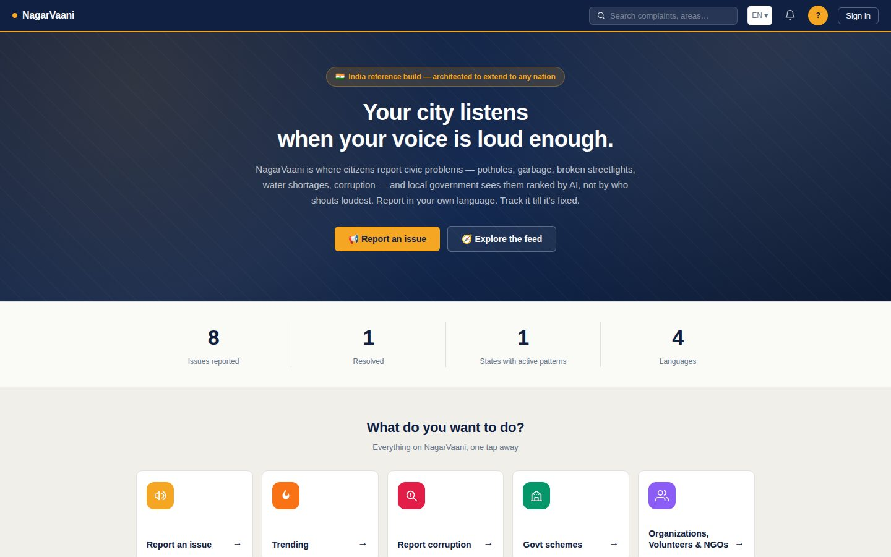
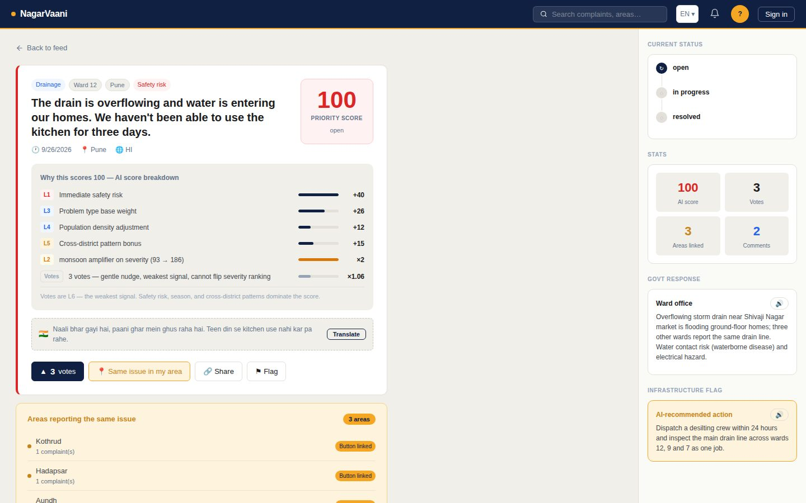
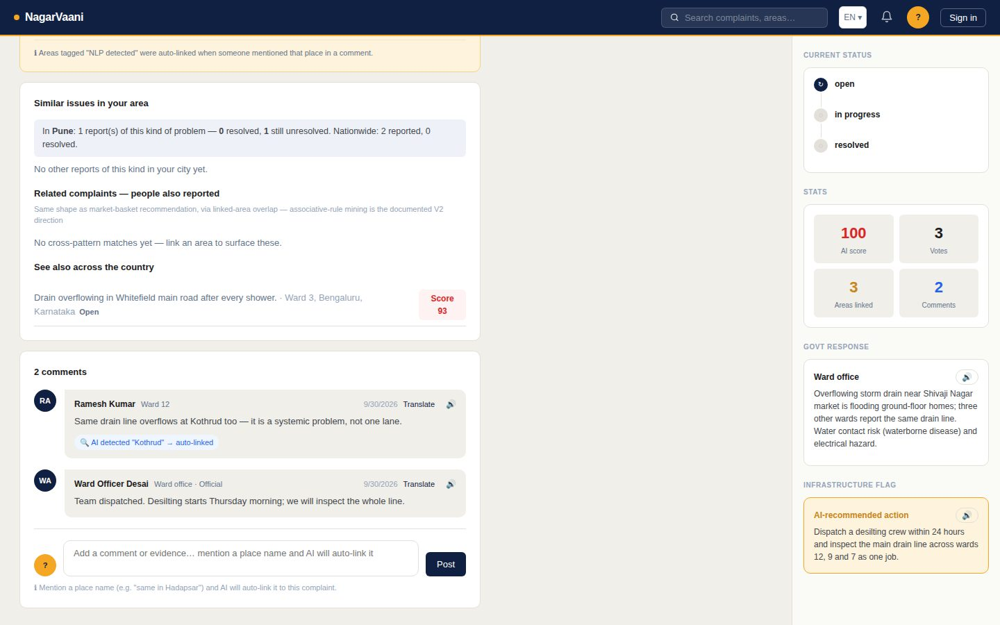
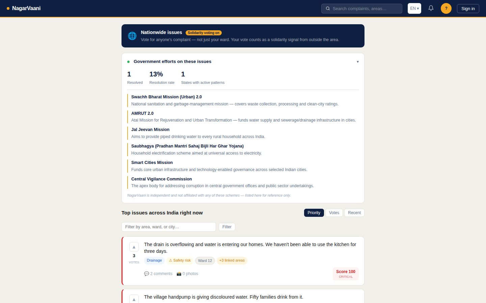
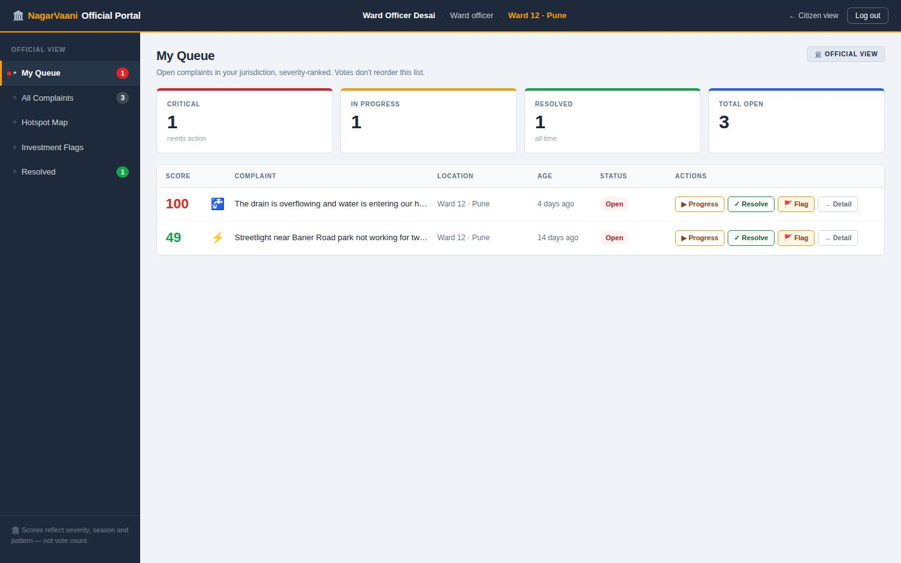
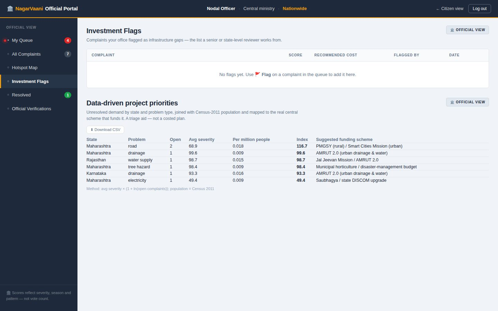
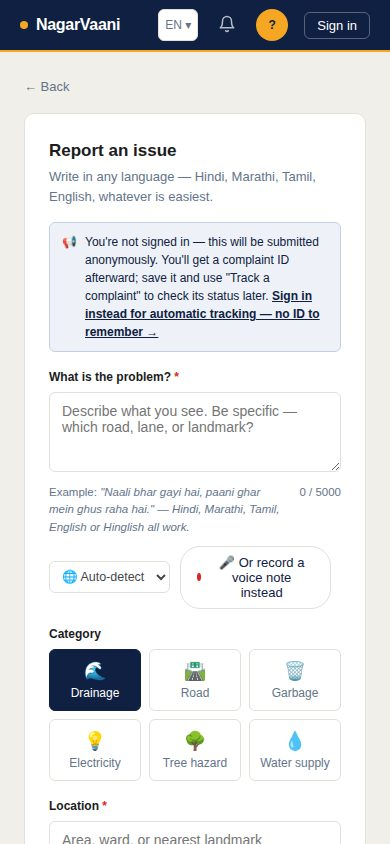

Your Voice, Your City.
A civic-intelligence layer that ranks public problems by how urgent they really are — not by who shouts loudest.

Requests are scattered across helplines, letters, WhatsApp groups, social media and separate portals — nobody sees the whole picture.
Ranking by votes, recency or city size rewards big cities and busy audiences — and buries villages, minority languages and problems people have stopped hoping will be fixed.
Spending drifts away from real need, infrastructure gaps stay open, and there is no way to tell whether an initiative actually changed anything.
The challenge: a scalable, multilingual AI platform that turns citizen requests into priorities policymakers can act on.
Urgency is a property of the problem, not of its audience. A village with one contaminated handpump must outrank a busy road with a hundred upvotes about potholes.
Urgency ≠ audience. Whether water is entering homes doesn't depend on who saw the post.
Problems repeat. One blocked drain is often one drain line across five wards — fix it once.
Votes serve accountability, not triage — they show attention and whether issues ever get resolved.
Let people speak — in their own language, by voice or chat.
Web form, voice note or Telegram. Hindi, Marathi, Tamil, English — even Hindi typed in English letters.
›AI rejects political or communal framing and suggests a neutral rewording.
›AI reads category, language, location and "is someone likely to be hurt soon?" and translates to English.
›Plain arithmetic, no AI. L1–L5 gives a 0–100 priority you can explain line by line.
›Ranked queue, AI brief, map. Status updates reach citizens and voters; a false "resolved" can be disputed.
The language model never decides who gets help first — that stays transparent and auditable.
If the AI service is down, complaints are still accepted; nothing is lost.
Gemini by default, Claude in one line; Whisper via Hugging Face, Groq or OpenAI.

Every complaint shows its own "Why this scores …" breakdown — and a plain-language How scoring works page explains L1–L5 to citizens.
Not only your ward — each with its status — so one locality's problem can be fixed together with the same problem elsewhere in the city.
The same problem type in other cities: a pattern visible nationally, not just locally.
"In Pune: 4 reports of this kind — 1 resolved, 3 still unresolved." Public proof of what gets fixed.
…and can say if it isn't. The original reporter can dispute a false "resolved".

Comment thread with an official reply, automatic place detection ("Kothrud" auto-linked), translation and 🔊 read-aloud.

Ranked by priority, with solidarity voting from outside the area. Paginated, filterable by area.

Only their ward, city or state — severity-ranked. "Votes don't reorder this list."

Unresolved demand by state × problem type, joined with Census-2011 population, mapped to the real central scheme (AMRUT 2.0, Jal Jeevan Mission, PMGSY…).
A triage index — not a costed plan. We removed an early made-up ₹ figure rather than replace it with another.
One-click CSV download, live hotspot map, investment flags, admin-approved officials.
| Typical public-complaint tools | NagarVaani | |
|---|---|---|
| Ranking | Votes, recency, city size | Severity × season × people × pattern; votes a small bounded signal |
| Language | One language, typed | Voice + text, Hindi · Marathi · Tamil · English, Hinglish, two-way translation, read-aloud |
| The AI | A black-box score | Explainable arithmetic — AI only reads and classifies |
| Follow-through | Complaint disappears into an inbox | Jurisdiction queue · status log · dispute a false "resolved" · voter notifications |
| Corruption | Mixed in with potholes | Separate, login-gated channel — never in public feeds |
| Openness | Closed | MIT licence, swappable AI/speech providers, CSV export |
Left column describes common patterns in complaint portals generally, not any single product.

API operations · 9 routers
database tables
pages, phone-ready
| Layer | Choice |
|---|---|
| Backend | Python · FastAPI · async SQLAlchemy |
| Database | PostgreSQL (Neon) · SQLite locally |
| Frontend | Vanilla JS ES modules · Leaflet + OpenStreetMap |
| Language AI | Gemini (default) · Claude switchable |
| Speech in | Whisper via Hugging Face / Groq / OpenAI |
| Speech out | Browser Web Speech API (no key) |
| Media · chat · mail | Cloudinary · Telegram Bot API · Brevo |
| Auth | bcrypt · JWT · e-mail OTP · Google (optional) |
| Hosting | Render (one service) + Neon |
No framework, no build step — the frontend is served by the same process as the API.
District table not wired)scripted endpoint checks — auth, roles, jurisdiction, limits, bad input — all passing
pages verified in a real browser at desktop and phone width — zero JS errors
critical account-takeover path found and fixed before submission
| Severity | Finding | Fix |
|---|---|---|
| Critical | Verification endpoint logged in any verified account; API exposed the author's id | Refuses verified accounts; only an is_author flag is returned |
| High | No brute-force limits on login / 6-digit OTP | Per-account & per-IP limits (429) |
| High | An official could change any complaint's status | Enforced inside their jurisdiction |
| Medium | Forgeable official flag; javascript: image URLs | Reserved prefix; https-only, no inline JS |
| Medium | Anonymous endpoints could burn AI credit | Per-IP limits, input caps, security headers |
Still on the list: token in localStorage, in-memory rate limiter, no CSP yet, AI filter fails open.
| Requirement | Status | Where we are |
|---|---|---|
| Voice, text, messaging intake | Done | Web · mic · Telegram (WhatsApp not built) |
| Multilingual | Done | 4 UI languages · AI understands more · two-way translation |
| Aggregate & surface hotspots | Done | Scoring, cross-area patterns, live map, ranked priorities |
| Combine with demographic data | Partial | Census-2011 state populations in priorities; per-area density still a constant |
| Infrastructure indices · investment plans | Gap | Not ingested — the largest gap |
| Recommend priority projects | Partial | Transparent triage index + matching central scheme; no costs |
| Measure impact | Partial | Status log, disputes, resolved counts; no outcome dashboard yet |
| Digital Public Good | Partial | MIT licence · privacy note · swappable providers; open-data export pending |
| BRICS | Gap | India only — scoring & dashboards are country-agnostic; the data pack is not |
country field + data pack (states, schemes, languages) per nationHardening on the way: Redis rate limiting · Content-Security-Policy · httpOnly cookies · human-review queue when AI is unavailable.
NagarVaani was conceived, specified and driven by one developer — the problem framing, the scoring philosophy, what to build and what to leave out, deployment and hands-on testing of every flow.
AI coding assistants wrote and reviewed code faster, the way a compiler or linter helps — while the developer set the requirements, rejected what didn't fit, and verified the result.
The judgement shows: we removed an invented ₹ figure instead of replacing it, and fixed a critical flaw found in our own security review.
Code & docs: github.com/FalguniTakawale/NagarVaani
Telegram: @NagarvaaniHackBot
Licence: MIT · Independent civic-tech prototype